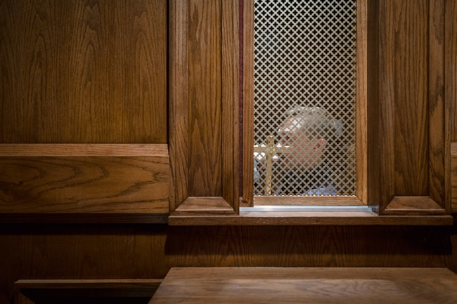
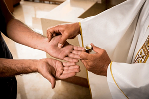
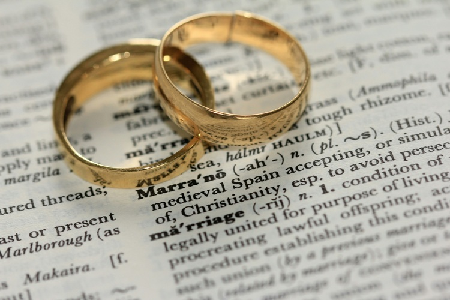

"Our Lord in the Blessed Sacrament has His hands full of graces, and He is ready to bestow them on anyone who asks for them."
- St Peter of Alcantara
The Sacrament of Penance & Reconciliation
"The whole power of the sacrament of Penance consists in restoring us to God's grace and joining us with him in an intimate friendship. Reconciliation with God is thus the purpose and effect of this sacrament. For those who receive the sacrament of Penance with contrite heart and religious disposition, reconciliation is usually followed by peace and serenity of conscience with strong spiritual consolation. Indeed the sacrament of Reconciliation with God brings about a true "spiritual resurrection," restoration of the dignity and blessings of the life of the children of God, of which the most precious is friendship with God." - CCC 1468
Confession Schedule:
Every Friday
7:30PM - 8:30PM
Main Church - Confession Booth


The Sacrament of the Anointing of The Sick
"By the sacred anointing of the sick and the prayer of the priests the whole Church commends those who are ill to the suffering and glorified Lord, that he may raise them up and save them. And indeed she exhorts them to contribute to the good of the People of God by freely uniting themselves to the Passion and death of Christ." - CCC 1532
Receiving this sacrament:
Please call the parish office in case of serious illness or hospitalisation as soon as possible to make arrangements.
Parish Office: +65 6280 0980
You may also contact the parish nearest to the hospital:
| Hospital | Nearest Parish | Telephone |
|---|---|---|
| CDC / Mount Alvernia / Mount Elizabeth Novena / Ren Ci / Tan Tock Seng / Thomson Medical Centre | Church of St Alphonsus (Novena Church) | 6255 2133 |
| Farrer Park / KK Women's & Children's / Raffles Hospital | Church of Our Lady of Lourdes | 6294 0624 |
| Kwong Wai Shiu Hospital | Church of St Michael | 6291 9272 |
| Mount Elizabeth Hospital | Church of the Sacred Heart | 6737 9285 |
| Singapore General Hospital | Church of St Bernadette / Church of St Teresa | 6737 3529 / 6271 1184 |
| Sengkang General Hospital | St Anne's Church / Church of the Nativity of the Blessed Virgin Mary / Church of the Transfiguration | 6386 5072 / 6280 0980 / 6341 9718 |
| Woodbridge Hospital (IMH) | Church of St Vincent de Paul | 6482 0959 |
| Ang Mo Kio Community Hospital | Church of Christ the King | 6459 9958 / 6457 7122 |
| Khoo Teck Puat Hospital | Church of Our Lady Star of the Sea | 6257 4229 |
| Mount Alvernia Hospital | Church of the Holy Spirit / Church of the Risen Christ | 6453 6340 / 6253 2166 |
| Changi General Hospital | Church of the Holy Trinity | 6784 2332 |
| Parkway East Hospital | Church of the Holy Family | 6344 0046 Ext. 1001 |
| Alexandra Hospital | Blessed Sacrament Church | 6474 0582 |
| Gleneagles Hospital | Church of St Ignatius | 6466 0625 |
| Jurong Community / Ng Teng Fong Hospital | Church of St Mary of the Angels | 6567 3866 |
| National University Hospital | Church of the Holy Cross | 6777 5858 |
The Sacrament of Holy Matrimony
"The matrimonial covenant, by which a man and a woman establish between themselves a partnership of the whole of life, is by its nature ordered toward the good of the spouses and the procreation and education of offspring; this covenant between baptised persons has been raised by Christ the Lord to the dignity of a sacrament." — CCC 1601
Marriage Preparation:
Couples are strongly encouraged to begin their marriage preparation journey at least one year in advance by meeting with a priest to discuss the sacrament and what it means to enter into a Catholic marriage.
To begin your journey or enquire about using the church for your wedding, please contact the parish office.
Parish Office: +65 6280 0980
Email: cnbvm.secretariat@catholic.org.sg
